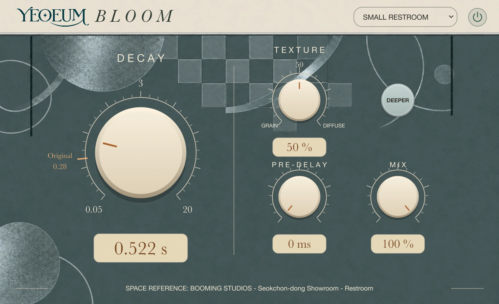
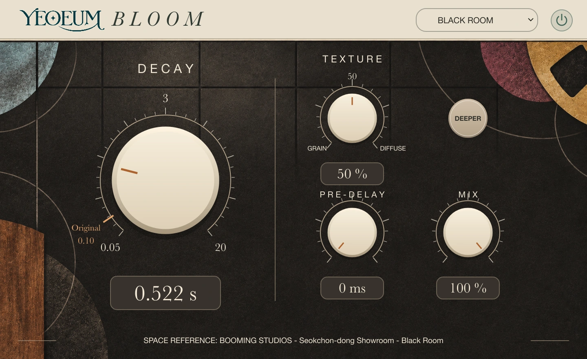
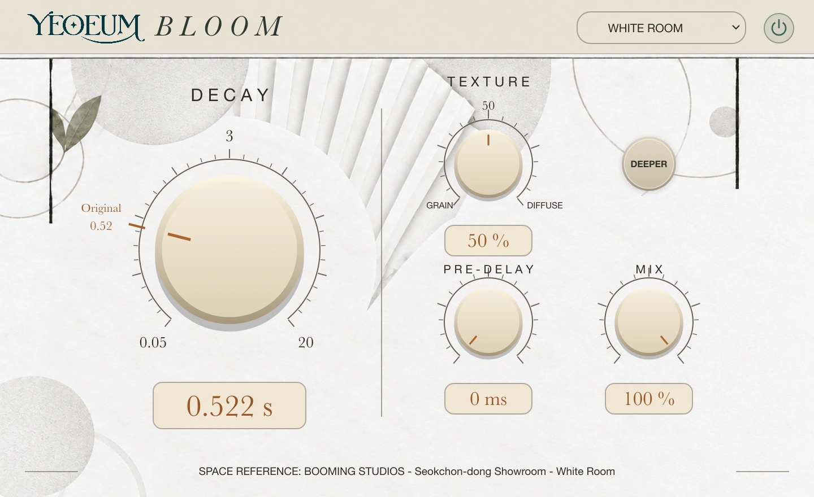

01
Decay
잔향 길이를 0.05초부터 20초까지 조절하세요.
공간을 바꿔도 설정한 길이는 유지됩니다. Original 표시를 누르거나 Decay 노브를 더블클릭하면 선택한 공간의 기준 길이로 돌아갑니다.
YEOEUM BLOOM 1.1.0
화이트룸의 울림부터 작은 화장실의 짧은 잔향까지. 실제 공간에서 측정한 감쇠를 바탕으로 만든 리버브를 당신의 음악에 더해보세요.
Bloom 다운로드macOS 15+ Apple Silicon · Windows x64



02 / SHAPE THE SOUND
01
잔향 길이를 0.05초부터 20초까지 조절하세요.
공간을 바꿔도 설정한 길이는 유지됩니다. Original 표시를 누르거나 Decay 노브를 더블클릭하면 선택한 공간의 기준 길이로 돌아갑니다.
02
성긴 입자에서 부드러운 확산까지.
왼쪽 GRAIN으로 돌리면 입자감이 살아납니다. 가운데 50%에서 오른쪽 DIFFUSE로 올리면 잔향이 더 촘촘하게 퍼지고 스테레오 폭이 넓어집니다.
03
소리와 잔향 사이에 작은 틈을.
잔향이 시작되기 전의 간격을 조절합니다. 원음의 어택을 살리거나, 뒤따라오는 울림을 연출할 수 있습니다.
04
음악 안에 놓일 만큼만.
원음과 효과음의 비율을 정합니다. 인서트에서는 취향에 맞게 섞고, 리턴 트랙에서는 100%로 사용해보세요.
03 / SPACE PACKS
공간 팩을 한 번 추가하면 플러그인의 공간 목록에 남습니다. 매번 파일을 다시 열 필요 없이, 다음 작업에서도 그 장소의 울림을 꺼내 쓸 수 있습니다.
프리셋 메뉴의 Add Space Pack…에서
별도의 .bloomroom 파일을 선택하세요.
FROM YOUR ROOM, WITH YEOEUM
매일 머무는 방에도 귀 기울여볼 만한 소리가 있습니다.
여음으로 나만의 공간을 측정하고 기록해보세요.
공간의 울림을 듣고, 기록하고, 다른 소리로 이어가는 것.
여음과 블룸은 그 경험을 함께 만들어갑니다.
04 / GET BLOOM
YEOEUM Bloom 1.1.0
Apple Silicon · macOS 15 이상
VST3 + AU · 약 34 MB
Developer ID 서명 · Apple 공증 완료
기본 공간 3개 · 한국어 / English Info
Windows x64
VST3 · 약 20 MB
미서명 설치파일로, 실행 시 알 수 없는 게시자 경고가 표시될 수 있습니다.
AU는 macOS 전용 형식입니다.
DAW를 종료한 뒤 내려받은 PKG를 실행하세요. VST3와 AU가 공용 플러그인 폴더에 함께 설치됩니다. DAW를 다시 열어 플러그인을 검색하고, 로고를 눌러 Info에서 버전 1.1.0을 확인하세요.
VST3: /Library/Audio/Plug-Ins/VST3/
AU: /Library/Audio/Plug-Ins/Components/
DAW를 종료하고 내려받은 Setup.exe를 실행하세요. 기본 설치 위치는 공용 VST3 폴더이며, 설치 화면에서 스캔 폴더를 바꿀 수 있습니다. 이 Windows 설치파일은 코드 서명이 없어 알 수 없는 게시자 경고가 표시될 수 있습니다. 파일명과 다운로드 출처를 확인해주세요.
C:\Program Files\Common Files\VST3\YEOEUM Bloom.vst3
Mix의 기본값은 리턴 트랙용 100%입니다. 악기나 오디오 트랙에 직접 넣었다면 Mix를 낮춰 원음과 섞어보세요. Mix 노브를 더블클릭하면 100%로 돌아갑니다.
현재는 블룸용으로 제작된 .bloomroom 공간 팩을 추가할 수 있습니다. 모바일 앱의 측정 기록이나 일반 WAV 파일을 플러그인에 직접 불러오는 방식은 아닙니다. 여음 모바일 앱에서 공간을 측정하고 기록하는 방법을 먼저 살펴보세요.
YEOEUM BLOOM RESEARCH
간단한 공간 감쇠 측정을 이용한 IR 합성과 창작 활용
여음 측정 데이터를 잔향 합성으로 연결한 설계 과정과 검증 결과를 정리했습니다.